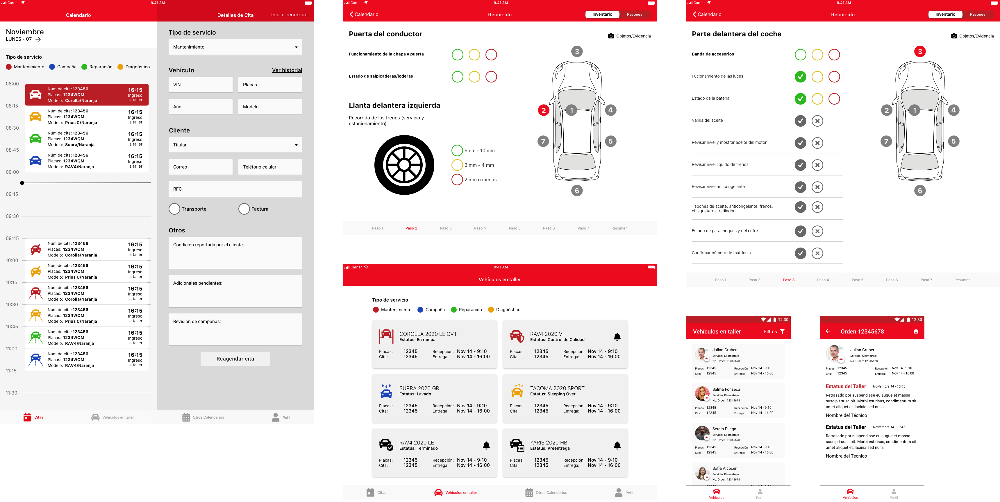
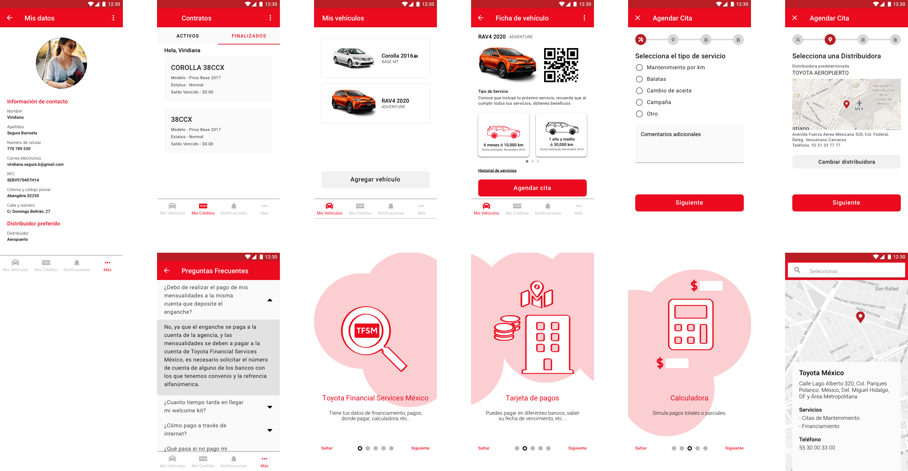
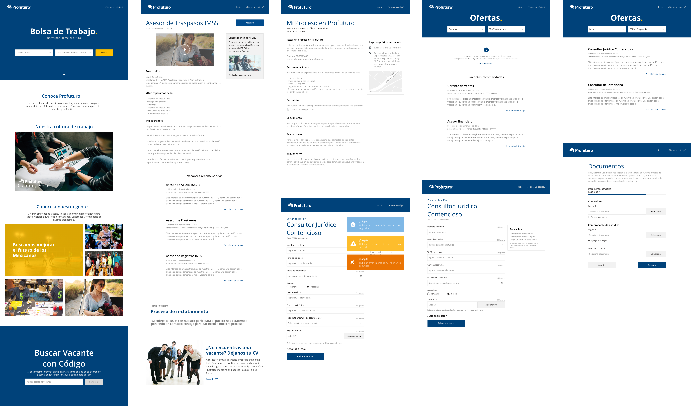
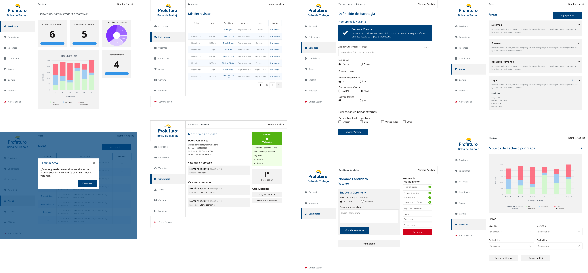
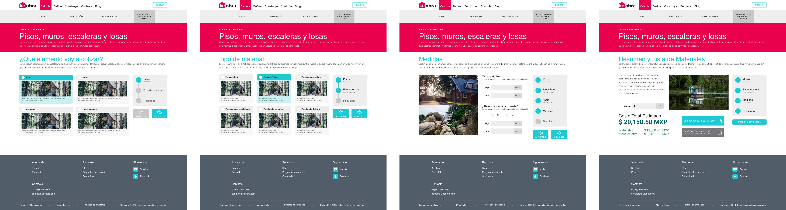
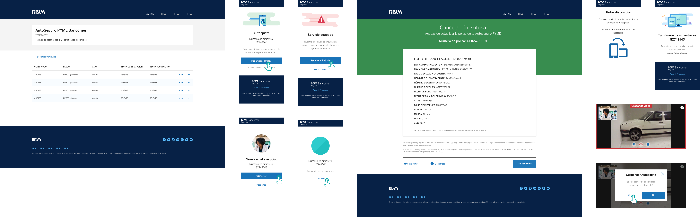
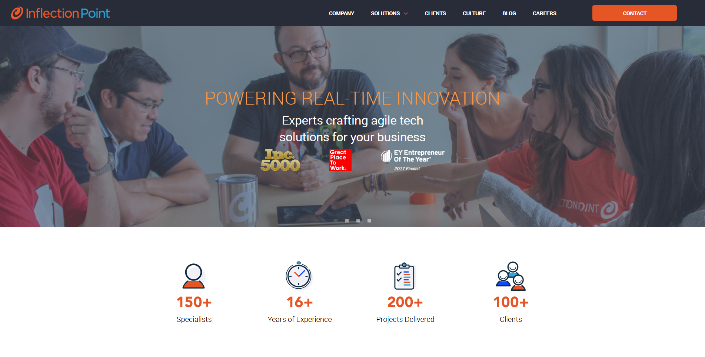
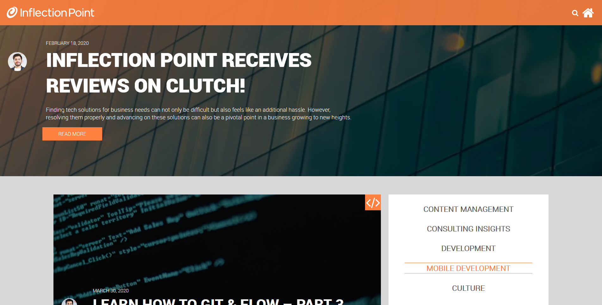
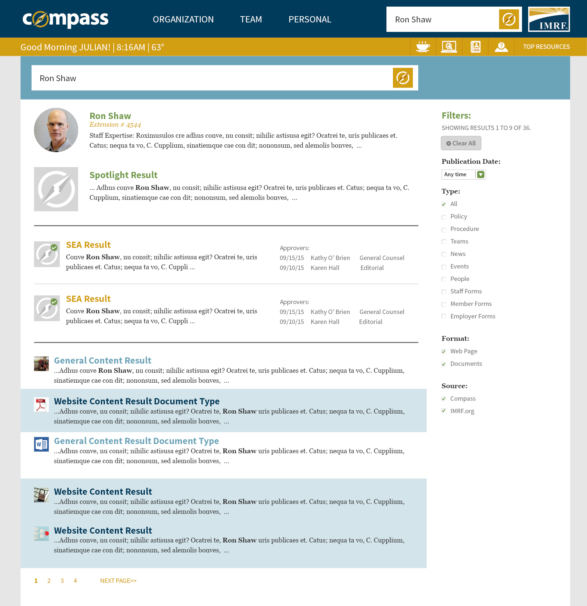
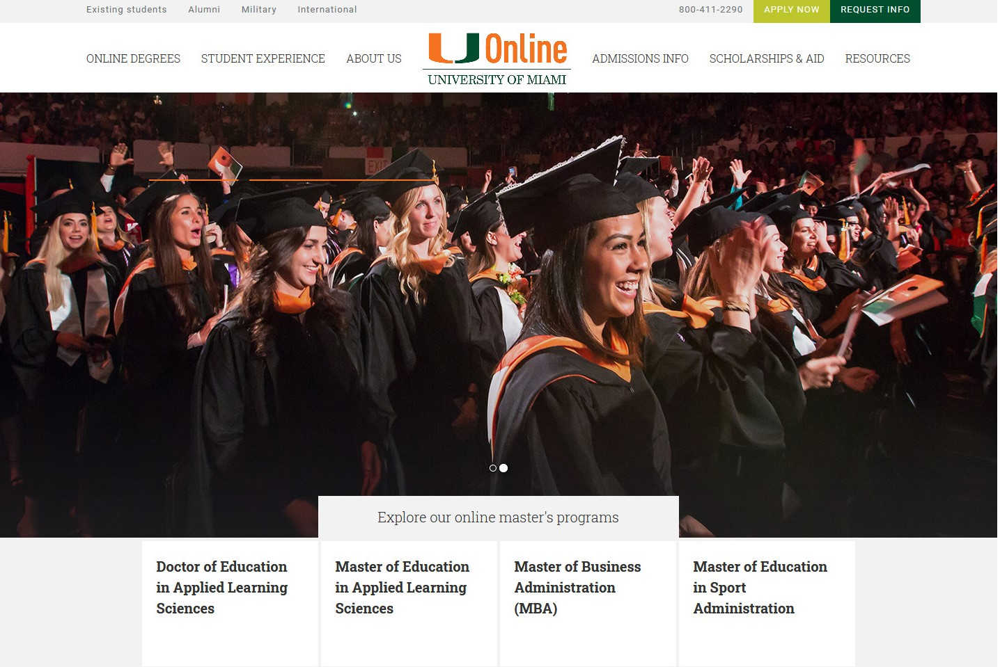

As UX/UI Designer
Toyota's Service application
Two applications were designed. One for smartphones (Android and iOS) focused for Toyota clients, in which they could schedule service appointments and trace its service status; additionally they could watch the status of their credit. And the other app was designed for tablets (iOS), focused for service agents of the different car dealerships, where they could trace the status of service of any of its clients.
For each application the design workflow started with the understanding of the problem, then the information architecture analysis was made, and based on this discoveries the different sections were proposed and the UI Kit was developed trying to create a visual image that would be consistent across all devices and platforms. For the UI Kit the principles of Atomic Design and Material Design were followed, considering the particularities of each operating system and device to be used.
With the visual design proposal, a prototype was made, and a usability test was held, inviting the service agents to test the service application. Then the results were properly analyzed, and the results were presented to the stakeholders. Finally, with these results, improvements to the app were made as a team.
Profuturo's Bolsa de Trabajo
An online career center was designed with two endpoints. The first one was the pubic web, where the candidates would go and search for open positions and apply. And the second endpoint being the Backoffice where the recruitment team would create and manage the positions.
The design workflow started with the understanding of the problem, users, internal processes and business rules. Discovery and empathy workshops were held to understand the process and create the user journey. Also Design workshops helped to discover ideas, and gain user and stakeholder validation.
Cemex Ventures
A Webapp was redesigned with the purpose of helping people with construction projects. The app would help you calculate how much material would be needed to make a wall, room, or an entire house. Also, would give you advise and tutorials on how to make those projects on your own.
For the redesign a UI Kit was created following the Atomic Design principles, only taking the colors and typography previously used. With the UI components created, the pages and sections of the Webapp were created with an emphasis of user journey, interaction and usability.
Seguros Bancomer
Two applications for the bank’s clients were designed. The first app was a Webapp and was focused on getting car insurance quotations. The second one was a mobile app focused on getting help in case of a small car incident, and using this app the clients could start a insurance claim in minutes without the need to wait for an agent.
For the design workflow the steps were: understanding of the problem, information architecture, and mockups, wireframes and prototypes creation.
As Front End Developer
Inflection Point's Webpage and Blog
The corporative webpage and blog were redesigned. For both projects the design was done, and the front end was coded, working close with the designers and stakeholders to solve problems.
IMRF Intranet
The intranet for a public pension system in United States was redesigned. This Intranet allows employees to search coworkers, watch news, events, and birthdays. Also allows employees to create work groups, share documents and send instant messages.
University of Miami Online
The University of Miami was redesigned. This website allows people to see information about Master and PhD courses. It was done with a mobile-first approach due to a previous discovery that users were starting to access the website from mobile devices.
As Full Stack Developer
Internal Application
An internal application for the city hall focused on measuring its made promises and how much progress has been made for each one. The system allows users to add the promises and objectives and assign them to the responsible people.